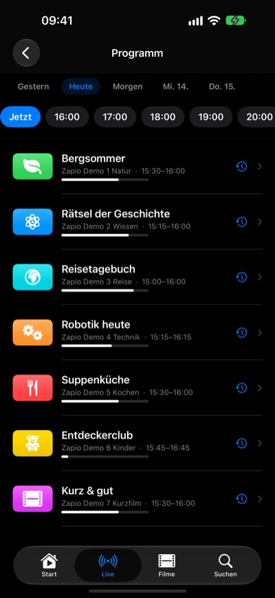
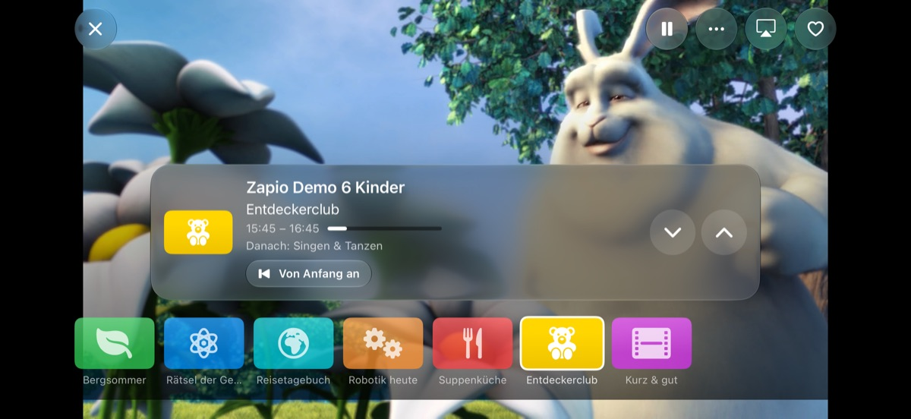
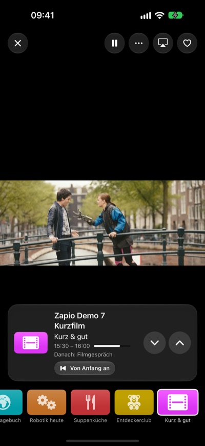
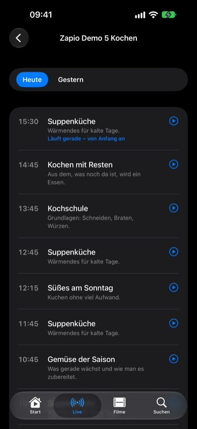
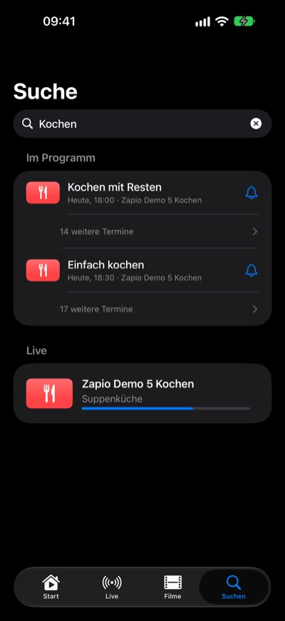
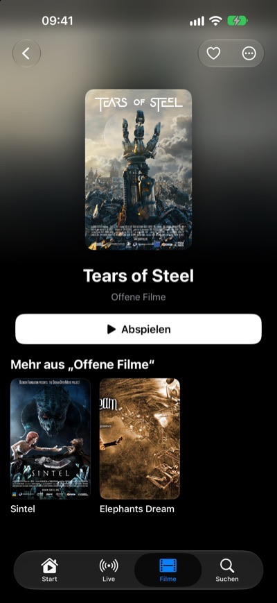
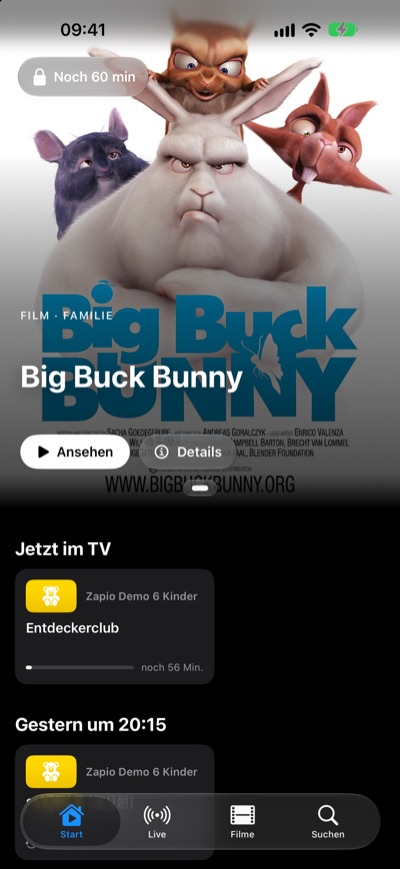

Über mehrere Tage.
Tagesleiste „Gestern · Heute · Morgen …“, so weit das Programm reicht. Das Wochenprogramm gibt es auch direkt im Player.

Für iPhone, iPad und Apple TV · Bald im App Store
Genug von IPTV‑Apps, die ruckeln, hängen und aussehen wie vor zehn Jahren?
Zapio macht aus deiner Playlist Fernsehen, das sich anfühlt wie ein Streamingdienst: wischen – und der nächste Sender ist da. Programmführer, Archiv, Filme und Serien, schön sortiert auf iPhone, iPad und Apple TV. Monatlich oder einmal für immer – kein Abo-Zwang. Ohne Werbung, ohne Konto, ohne Tracking.
Zapio bietet selbst keine Sender oder Filme an. Für eigene Inhalte brauchst du eine Playlist oder einen Zugang deines Anbieters.

Warum Zapio
Statt Schwarz das letzte Bild: Bei Sendern, die du schon gesehen hast, erscheint es sofort und bleibt, bis das Live‑Bild übernimmt.
Startseite mit „Jetzt im TV“ und Weiterschauen, Programmführer über mehrere Tage, eine Suche für Sender, Filme, Serien und Sendungen. Sendernamen ohne Technik‑Kürzel.
Zugangsdaten bleiben im Schlüsselbund deines Geräts. Zapio hat keinen eigenen Server, keine Werbung und keine Analyse. Monatlich oder einmal für immer – du wählst.
Umschalten
Nach oben wischen, nach unten wischen – Zapio zeigt das letzte Bild des Senders, sofern du ihn schon gesehen hast, und verbindet im Hintergrund.

Bei Sendern, die du schon gesehen hast, erscheint beim Wechsel sofort das letzte Bild. Sobald der Stream steht, übernimmt das Live‑Bild.
Wischen, Pfeile oder die Senderleiste – unter jedem Logo steht, was dort gerade läuft. Zurück zum vorigen Sender geht mit einem Tipp.
Liefert die HD‑, FHD‑ oder HEVC‑Fassung eines Senders gerade nicht, nimmt die App eine andere – automatisch, ohne dass du suchen musst.
Ein Stream, kein Stress
Viele Zugänge erlauben nur eine Wiedergabe gleichzeitig. Zapio gibt Streams sauber frei, wartet nach dem Umschalten, bis der Anbieter die alte Verbindung freigibt, und sagt dir klar, wenn gerade ein anderes Gerät schaut.
Live, Film und Archiv teilen sich den einen Stream – nie zwei auf einmal.
Hältst du an und verlässt die App, gibt Zapio den Stream nach kurzer Zeit frei – das Apple TV im Wohnzimmer kann gleich übernehmen.
Blockt der Anbieter wegen iCloud Privat‑Relay oder VPN, nennt Zapio die Ursache und erklärt die Abhilfe.
Zugang, Netzwerk, Apple‑Player und VLC werden einzeln geprüft – mit klarem Ergebnis.
Programmführer
Ein Programmführer über mehrere Tage, das Archiv deines Anbieters und eine Suche, die auch Sendungen der nächsten sieben Tage findet. Programmdaten kommen von deinem Anbieter oder aus einer eigenen XMLTV‑Adresse.
Tagesleiste „Gestern · Heute · Morgen …“, so weit das Programm reicht. Das Wochenprogramm gibt es auch direkt im Player.

Bietet dein Anbieter ein Archiv: verpasste Sendungen je Sender, „Von Anfang an“ für die laufende Sendung, Vormerken für kommende.

Sender, Filme, Serien und das Programm in einem Feld – mit Erinnerung fünf Minuten vor Beginn. „Immer erinnern“ merkt sich ganze Reihen.

Filme und Serien
Nach Kategorien geordnet, mit Weiterschauen an der richtigen Stelle und automatisch nächster Folge. Weiterschauen, Favoriten und Gesehenes gleicht iCloud zwischen iPhone, iPad und Apple TV ab.

Familie
Der Kindermodus zeigt nur Kindersender und Kinderkategorien – überall, auch in Suche und Siri. Auf Wunsch mit Fernsehzeit pro Tag. Beenden nur mit der Eltern‑PIN.

Im Alltag
Vom unteren Rand nach oben wischen – das Bild läuft klein weiter. Mit dem Apple‑Player.
Live‑Sender und Filme auf Apple TV oder einen AirPlay‑Fernseher – mit dem Apple‑Player.
„Schalte … in Zapio ein“, „Was kommt heute Abend in Zapio“, „Weiterschauen in Zapio“.
Klein, mittel oder groß auf dem Home‑Bildschirm. Antippen schaltet ein.
Pause, Weiter und Sender wechseln vom Sperrbildschirm und aus dem Kontrollzentrum.
Playlists und Xtream‑Zugänge nebeneinander – jeder mit eigenen Favoriten, Weiterschauen und Gesehenem.
MKV, AVI, MPEG‑TS und DASH laufen trotzdem – Zapio wechselt von selbst und merkt es sich je Sender.
Anbieter mischen oft Dutzende Sprachen. Zapio erkennt sie – auch an Ländernamen in den Kategorien. Du wählst deine, der Rest verschwindet.
Zwei oder vier Sender gleichzeitig – perfekt für den Fußball‑Samstag. Antippen schaltet den Ton um. Wenn dein Zugang mehrere Streams erlaubt.
Event‑ und Pay‑per‑View‑Sender zeigen, was wann läuft. Statt schwarzem Bild steht da: „Beginnt um 20:30“.
Liefert dein Anbieter kein Bild, nur Schwarz oder ist sein Server weg, sagt Zapio es sofort – und dass es nicht an der App liegt.
Läuft gerade ein Film im Fernsehen, den dein Anbieter auch als Film hat, zeigt Zapio ihn dir – ohne Werbepausen.
Was heute Abend läuft, direkt auf der Startseite – und was gestern Abend lief, zum Nachschauen im Archiv.
Eine Mitteilung, sobald deine Serie eine neue Folge hat. Erinnerungen an Sendungen fünf Minuten vor Beginn.
Deine Sender, Filme und Serien an einem Ort – auf iPhone, iPad und Apple TV gleich, über iCloud.
Startet ein Sender mit dem Apple‑Player zu langsam, nimmt Zapio beim nächsten Mal gleich VLC. Ohne Einstellungen.
Deutsch, Englisch, Französisch, Spanisch, Italienisch, Niederländisch, Polnisch und Türkisch.
„Zuletzt gesehen“ einzeln entfernen oder den ganzen Verlauf löschen – auf allen Geräten.
Quellen und Geräte
Zapio ist ein IPTV‑Player für die Playlists und Zugänge, die du schon hast. Die App verbindet sich direkt mit deinem Anbieter – ohne Umweg über einen Zapio‑Server.
Per Link oder auf iPhone und iPad als Datei aus der Dateien‑App. Mehrere Playlists nebeneinander, jede mit eigenen Favoriten.
Server, Benutzername und Passwort eintragen: Zapio lädt Live‑Sender, Filme, Serien und – wenn dein Anbieter eines hat – das Archiv.
Programmdaten deines Anbieters oder eine eigene XMLTV‑Adresse, auch gepackt (.gz). Programmführer über mehrere Tage, Erinnerungen und Suche im Programm.
Fritz!Box Cable und SAT>IP‑Server findet Zapio im Heimnetz und richtet die Senderliste mit einem Tipp ein. Für Jellyfin, Plex, Emby und TVHeadend zeigt eine Kurzanleitung, wo Senderliste (M3U) und Programm (XMLTV) stehen. Alles bleibt in deinem Heimnetz.
Wischen zum Umschalten, Bild‑in‑Bild, AirPlay und Widget. Multiview mit zwei Sendern auf dem iPhone und bis zu vier auf dem iPad – wenn dein Zugang mehrere Streams erlaubt.
Umschalten mit der Siri Remote, Programmführer als Raster, Weiterschauen im Top Shelf. Zugänge vom iPhone übernehmen – per Code im eigenen Netz oder über den iCloud‑Schlüsselbund.
Die Vollversion gilt auf iPhone, iPad und Apple TV mit derselben Apple‑ID. Favoriten und Weiterschauen gleicht iCloud ab – ohne Zugangsdaten.
Privatsphäre
Zapio hat kein Konto und keinen eigenen Server. Es gibt keine Werbung, keine Analyse, kein Tracking und keine automatischen Absturzberichte an uns. Die App verbindet sich mit den Servern, die du selbst einträgst – und mit wenigen Diensten, die die Datenschutzerklärung einzeln nennt. Die automatische Netzwerkprüfung lässt sich abschalten.
Laut den Datenschutzangaben der App: keine erfassten Daten, kein Tracking.
Zugangsdaten sind an dieses Gerät gebunden und wandern nicht mit.
Die vollständige Datenschutzerklärung steht in der App und hier auf der Website – auch für die Website selbst.
Preis
Die Demo und die vier offenen Filme sind immer kostenlos. Mit deinem eigenen Anbieter testest du Zapio 7 Tage lang – die Testphase startet erst, wenn du sie antippst, und endet von selbst, ohne Abbuchung.
tvOS 17 oder neuer. Umschalten mit der Siri Remote, Programmführer als Raster, Weiterschauen im Top Shelf – Kauf und Abo gelten auf iPhone, iPad und Apple TV.
Fragen
Nur zum Ausprobieren. Zapio ist ein Player und bietet selbst keine Sender an. Für eigene Inhalte brauchst du eine Playlist (M3U) oder einen Zugang deines Anbieters (Xtream). Die eingebaute Demo hat sieben erfundene Sender mit öffentlichen Teststreams und vier offene Filme.
Playlist‑Link einfügen oder Server, Benutzername und Passwort eintragen – Zapio erkennt die Art selbst. Auf iPhone und iPad geht auch eine Playlist‑Datei aus der Dateien‑App. Die Zugangsdaten bleiben im Schlüsselbund deines Geräts.
Die Demo ist immer kostenlos. Mit deinem Anbieter testest du 7 Tage kostenlos. Danach wählst du – kein Abo-Zwang: das Monatsabo für 3,99 € pro Monat (verlängert sich automatisch, jederzeit kündbar) oder die Vollversion als einmaliger Kauf für 34,99 € (Einführungspreis bis 31.12.2026, danach 44,99 €) mit Familienfreigabe und allen 1.x‑Updates. Preise für den deutschen App Store.
Ja, dafür ist Zapio gebaut. Live, Film und Archiv teilen sich die eine Verbindung, und beim Umschalten wartet die App, bis der Anbieter die alte Verbindung freigibt. Läuft auf einem anderen Gerät etwas, sagt Zapio es dir.
Ja, mit dem Apple‑Player – also bei Live‑Sendern (HLS) und Filmen im MP4‑Format. Formate wie MKV spielt Zapio über den eingebauten VLC‑Player; dort gibt es kein Bild‑in‑Bild und kein AirPlay. Gibt es einen Film auch als MP4, wählt Zapio diese Fassung vor.
Wenn dein Anbieter ein Archiv anbietet, ja: „Verpasste Sendungen“ je Sender, „Von Anfang an“ im Player, und kommende Sendungen lassen sich vormerken. Wie weit das Archiv zurückreicht, bestimmt der Anbieter.
Nein. Kein Konto, keine Werbung, keine Analyse, kein Tracking. Was du einträgst, bleibt auf deinem Gerät. Welche Server die App kontaktiert, nennt die Datenschutzerklärung einzeln. Die automatische Netzwerkprüfung lässt sich abschalten.
Ja. Zapio läuft auch auf Apple TV (tvOS 17 oder neuer). Playlist‑Link oder Xtream‑Zugang trägst du dort direkt ein oder übernimmst ihn vom iPhone – per Code im selben Netzwerk oder über den iCloud‑Schlüsselbund. Ein Kauf gilt auf iPhone, iPad und Apple TV.
Ja. Server, Benutzername und Passwort deines Anbieters eintragen – Zapio lädt darüber Live‑Sender, Filme, Serien, das Programm und, wenn dein Anbieter eines hat, das Archiv.
Ja. Der Programmführer zeigt die Programmdaten (XMLTV) deines Anbieters über mehrere Tage – auf iPhone, iPad und Apple TV. Fehlt das Programm oder ist es lückenhaft, trägst du eine eigene XMLTV‑Adresse ein, auch gepackt (.gz).
Ja, mit Multiview: auf iPad und Apple TV zwei oder vier Sender, auf dem iPhone zwei. Jeder Sender ist ein eigener Stream – Multiview gibt es deshalb nur, wenn dein Zugang mehrere Streams gleichzeitig erlaubt.
Auf iPhone und iPad ab iOS bzw. iPadOS 17 und auf Apple TV ab tvOS 17 – auf Deutsch, Englisch, Französisch, Spanisch, Italienisch, Niederländisch, Polnisch und Türkisch.
Zapio kommt bald in den App Store. Bis dahin: Lies, was die App kann, oder schreib uns, was du dir wünschst.